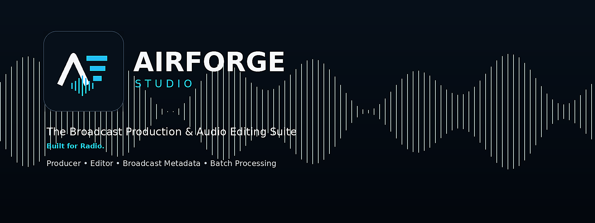
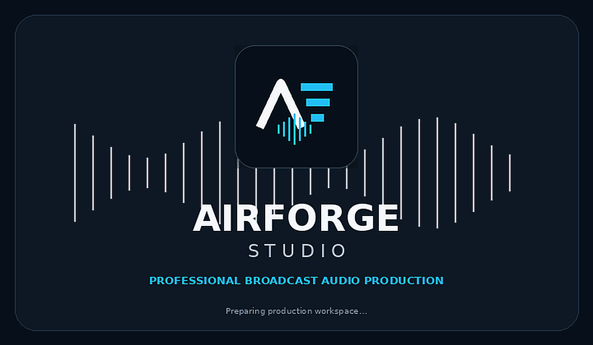

Interested in AirForge Studio?
We're still building. Get in touch to follow the progress, ask questions, or let us know what your station needs.
Windows 10 / 11 · In active development · Built for Radio
AirForge Studio is a broadcast-first production suite for radio teams. Multitrack Producer, precision waveform Editor, a full FX Rack, SCOT metadata, Intro/EOM markers, and WideOrbit-ready export — all in one focused application. Currently in active development.

Every feature in AirForge exists because radio production teams need it. Nothing more, nothing that gets in the way.
Up to 16 tracks. Drag, arrange, trim, split, and fade clips. Build carts, beds, VO stacks, stingers, and promos fast.
Stereo L/R display with sample-accurate selection. Cut, copy, paste, silence, and fade with full undo history.
Per-track FX rack with EQ, Dynamics, Delay, Reverb, Voice processing, Limiter, and filters — applied live or pre-rendered.
Asset ID, title, artist, outcue, dates, Intro and EOM markers — all embedded in the WAV on export.
Convert, normalize, rename, and tag entire folders of files. Consistent broadcast standards across your whole library.
The Phoenix engine keeps up with fast radio workflows — stutter-free across multiple tracks with effects, instant transport response.
Each track in the Producer now has its own FX rack — a slot-based chain of processors you can stack, reorder, and tweak in real time while audio plays.
Switch between workspaces without losing your place. Markers, metadata, and session state follow you everywhere.
Multitrack timeline for fast radio production. Build carts, beds, stacks, stingers, and promos — with a full FX rack on every track.
Stereo L/R waveform view for detailed editing, marker placement, metadata entry, and broadcast-spec export.

Drag WAV or MP3 files onto any track. AirForge handles conforming automatically — no format juggling.
Build your production in the Producer. Stack clips, apply effects from the FX rack, and dial in your sound.
Place Intro and EOM cues. Fill in SCOT metadata. Audition the full mix before committing.
One click exports a WideOrbit-ready WAV with all markers and metadata embedded. Done.
We're still building. Get in touch to follow the progress, ask questions, or let us know what your station needs.
Windows 10 / 11 · In active development · Built for Radio